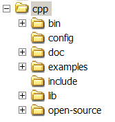

Section Summary: Requirements and how to install GigaSpaces C++ on Windows and Linux.
Overview
GigaSpaces C++ source code can be built on Linux and Windows 32bit or 64bit machines.
The current supported platforms and compilers are:
- Linux
- 64bit – gcc.3.4.5
- 32bit – gcc.3.4.6
- Windows
- 32/64bit – vs8.0 (Visual Studio 2005)
 Prior to installation, see the GigaSpaces installation prerequisites.
Prior to installation, see the GigaSpaces installation prerequisites.
Installation
- Download the C++ API file that suits your platform.
- Unzip the file into your <GigaSpaces Root> directory (download GigaSpaces here), using your favorite unzip tool (.e.g WinZip). For example - On linux you should run the following to install the C++ libraries:
tar -xzvf gigaspaces-cpp-7.X.X-ga-linux-amd64-gcc-3.4.5.tar.gz
Where the gigaspaces-cpp-7.X.X-ga-linux-amd64-gcc-3.4.5.tar.gz should be located at the /gigaspaces-xap-premium-7.X.X-ga folder.
- After unzipping the ZIP file, you should have the following files and folders under your <GigaSpaces Root>\cpp folder:

Setting the Environment
There are several environment settings that are necessary to build and run the examples that come with this package. This section lists these settings. Choose the tab below that matches your platform.
Windows
Environment Variables
The following environment variables need to be defined:
- JSHOMEDIR – the <GigaSpaces Root> directory.
- PLATFORM – the build platform, in this case win32 or win64.
- COMPILER – the compiler used for building, for example: VS8.0.
For example:
set JSHOMEDIR=C:\gigaspaces-xap-premium-7.1.0-ga set PLATFORM=win32 set COMPILER=VS8.0
In addition, the variable PATH should be updated to include:
%JSHOMEDIR%\cpp\lib\%PLATFORM%\%COMPILER%;%JSHOMEDIR%\cpp\bin\%PLATFORM%\%COMPILER%;%JAVA_HOME%\jre\bin\client
Environment Script Files
If you don't want to set these variables globally (by defining System Variables) then the GigaSpaces C++ package includes the following script files that help set the environment:
- <GigaSpaces Root>\cpp\env.cmd – Running this file defines these variables to match your platform.
- <GigaSpaces Root>\cpp\GigaVisualStudio.bat – Running this file starts Visual Studio and automatically sets the environment.
 You might need to edit these files to include the correct values for the JAVA_HOME and JSHOMEDIR environment variables and the correct location of Visual Studio.
You might need to edit these files to include the correct values for the JAVA_HOME and JSHOMEDIR environment variables and the correct location of Visual Studio.
Linux
Environment Variables
The following environment variables need to be defined:
- JSHOMEDIR – the <GigaSpaces Root> directory.
- PLATFORM – the build platform, in this case linux-amd64 or linux32.
- COMPILER – the compiler used for building, for example: gcc-3.4.5.
Example:
JSHOMEDIR=../../.. PLATFORM=linux-amd64 COMPILER=gcc-3.4.5
Environment Script Files
If you don't want to set these variables globally the GigaSpaces C++ package includes the following script file that help set the environment:
- <GigaSpaces Root>/cpp/setenv.sh – Running this file defines these variables to match your platform.
Testing the Installation
The package provides the following scripts (placed in <GigaSpaces Root>\cpp):
- sanity – Run sanity tests on embedded, remote and partitioned space
- runBenchmark – Run benchmark tests on embedded space
- runTest – Run all functional tests on embedded space
- testJiniTransactions – Run benchmark and functional tests on partitioned space using Jini Mahalo transactions
Result files can be found in <GigaSpaces Root>\cpp:
benchmarkResult*.txt – Benchmark tests results
testResult*.xml – Functional tests results
 What's next?
What's next?
- Write your first C++ Application
- Return to the C++ homepage